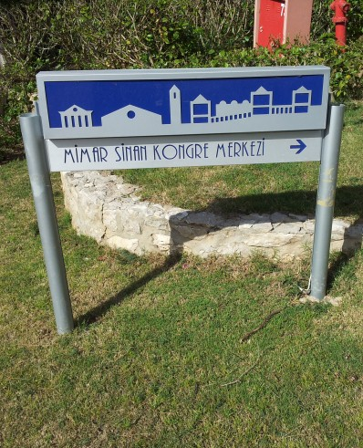
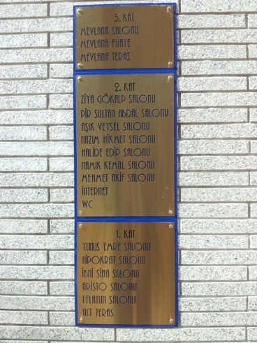

Konferanstan izlenimler
Malumunuz geçen hafta Sinyal İşleme ve İletişim Uygulamaları Kurultayı (SİU'12) gerçekleşti. Küçük küçük notlar aldım. Bazıları sunumlardan edindiğim bilgiler, bazıları ise 'sunumlara girip aklı başka yerlerde dolanan ben'in aldığı notlar. Bütünlüklü bir yazı olmadığının farkındayım. Aklımdakilerin uçup gitmesindense varsın böyle olsun diyerekten bu yolu tercih ettim.
İletişimdeki işteşlilik
M. Sezgin, davetli konuşmacı olarak yaptığı sunumunda, akıllı arayüzlerle ilgili yapılan çalışmalarda öncelikle kullanıcıyı iyi tanımak gerektiğinden bahsetti. Bu bence hakkını iyi veremediğimiz bir gereklilik. Arayüz tasarlamadığım için aklım başka şeylere kaydı: Ders anlatıp öğrenciyi anlamaya çabalamayan hocalarımız, kitap yazıp okurun takip edip edemeyeceğini düşünmeyen yazarlarımız ve bizzat gördüğüm üzere sunum hazırlayıp dinleyenlere konuyu kabaca da olsa anlatma derdi gütmeyen araştırmacılarımız var. İletişime geçtiğimiz her durumda (konuşmak, yazmak, şarkı söylemek, vd.) karşıdakini iyi tanımaya gayret etmeli, onun gözlerinden bakarak ve fakat kendimizi unutmayarak meramımızı anlatmaya çaba göstermeliyiz. Ancak böyle olursa iletişim oluyor. Aksi halde biri birtakım eylemler yapıyor, diğeri o sırada e-postasını kontrol ediyor, aklı bambaşka alemlerde fink atıyor.
Döngü sayısının rassallığı
Yinelemeli (iteratif) algoritmalar genellikle bir değişkenin değeri yakınsayana kadar koşturuluyor (run). Ve algoritma farklı örneklemler için birçok kez çağırılıyor. Buradaki döngü sayısı da esasında bir olasılık dağılımına sahip. Şimdiye kadar bunu kaydedip çizdirmeyi pek düşünmemiştim ama bundan sonra bunu araştırma düsturum içine eklemeyi düşünüyorum. Acaba uğraştığım algoritmanın döngü sayısı nasıl bir olasılık dağılımından geliyor ve parametreleri neler? Bu bence ilginç bir gözlem olacak. Böyle testlerin konuyla ilgili sezgiyi güçlendirmek için de önemli olduğunu düşünüyorum.
Yeni ne kadar yeni?
Bir araştırmacı sunum esnasında şuna benzer bir cümle kurdu:
- Bu konu yeni bir konu: 95'te Vapnik'in önerdiği...
Sunumdan kopmuştum ki bu cümleyle kendime geldim. İçimden araştırmacı arkadaşa da 'kendine gel' diyesim geldi ama dili sürçmüştür falan diye bekledim. Biraz ilerledi, bir cümle daha:
- Bu konu da yakın zamanda çalışılmaya başlanmış bir konu. 98'de önerilen bu yöntem...
Acaba, dedim, konunun o zaman kadir kıymeti bilinememiş de yeni bir gücü mü ortaya çıkarılmış. Yok, öyle de değil. Ayrıca dinlediğim çalışmada basit birkaç yapay dalga üstünde testler yapılmış, gerçek veride çalışılmamış.
Bilgisayar bilimlerinde bir konu güncelliğini birkaç yılda bitiriyor ve rafa kaldırılıyor, 15-20 yıl çok çok uzun bir süre. O çalışmanın ancak bambaşka bir yüzü ortaya çıkarılırsa yapılanlar ciddiye alınır. Sonuçta bahsi geçen herhangi bir blog yazısı değil, eşle dostla yapılan bir muhabbet değil; bir araştırmanın sonuçları. Yıllar önce gıygıdısının gıygıdısına kadar araştırılmış. Yeni şeyler eklemek için çok çok daha fazla çalışmak gerekiyor. Doğru zamanda, doğru konulara girişmek çok önemli. Bunu R. Hamming Amca derdi:
"If you are to do important work then you must work on the right problem at the right time and in the right way. Without any one of the three, you may do good work but you will almost certainly miss real greatness."
Yani Türkçesiyle:
"Eğer önemli bir iş yapmak istiyorsanız, doğru problemle, doğru zamanda, doğru yolla uğraşmalısınız. Bu üçünden biri olmazsa, belki iyi işler becerebilirsiniz ama esas yüceliği ıskalarsınız."
Bir yanda özgür bilim, bir yanda patent
Konferansın ikinci günü akademi - sanayi işbirliği paneli vardı. Türk Telekom, Avea gibi büyük şirketlerin ar-ge bölümlerinin üst düzey yöneticileri davetliydi. Böyle konuları dinlemek ve gözlem yapmak iyi. Ben de geçtim bir köşeye, dinledim davetlileri. Dinleyicilerin büyük çoğunluğu üniversitelerdeki öğretim üyeleri. Benim gibi doktora öğrencisi kılıklı çok insan çarpmadı gözüme. Dinlediklerimi anahtar sözcüklerle ifade edecek olursam: reklam, patent, kâr ve inovasyon. Ayrıntısı ise şöyle:
- Hangi konuşmacı konuşursa konuşsun, şirketini bir kenara bırakamıyor. Konuşmaların büyük bir kısmı biz şunu yaptık, biz bunu yaptık; böyle büyük bir firmayız, şöyle en iyiyiz demekle geçiyor.
- Konuşmaların tamamı bunun üstüne odaklı. İşbirlikler sonucunda ne kadar çok patent alınırsa o kadar başarılı olunmuş sayılıyor. "Akademisyenlerin makale yazması gibi düşünüyoruz bunu" deniyor.
- Kâr, malumunuz parasal bir kâr.
- İnovasyon bir edat gibi her boşluğa koyulabiliyor. İnovasyon (innovation) yenilik demek. Akademik araştırmalarda olmazsa olmak bir şey zaten. Ayrıca lafını etmeye gerek yok. Memleketimin şirket jargonundaysa çok karizmatik bir kelime. Yenilik derseniz olmuyor, inovasyon demenin tadı apayrı.
Ben de şöyle şeyler düşündüm:
- Ben yaptığımız çalışmaları anlatırken, Boğaziçi şöyle süper, böyle hiper gibi hiçbir cümle sarfetmiyorum. Sadece ben değil, konferanstaki kimse kurumunu bu şekilde dile getirmiyor. Sunumların ilk sayfasında bir niteleme sıfatı olarak duruyor yalnızca. Konu ortadaki araştırma. Zaten ilgilenen olursa gelir Boğaziçi'ni, ya da her ne ise onu bulur, sever, över.
- Dünya akademisi açık bilime (open science) doğru gidedursun, sanayi fikrimizi nasıl sadece kendimize saklarız derdinde. Sanayi olması için gerekli belki de, ama bu talepler akademinin düsturlarına tamamen ters. Biz yazdıklarımızı başkalarının da kullanmasının peşindeyiz. Bizim için onur verici şey yaptıklarımızın etkisi, kabul görmesi.
- Kâr olarak yalnızca kısa vadeli, ekonomik büyüme görüldükçe durum ortada. Çok paramızın olması çok çok önemli ama bu ancak uzun vadeli, samimi ve insan odaklı yatırımlarla oldukça gerçek değere ulaşıyor.
- "ismailari.com: inovasyonda lider makaleler üretir!" Bu cümlem size saçma gelmediyse bu işte bir gariplik var :)
Velhasılkelâm, bu işbirliği zor, takımların koşturduğu ligler birbiri ile pek bir alakasız.
Çok konuşmak ve baskınlık
Daniel Gatica-Perez'in sunduğu, toplantı videoları üstünde yapılan araştırmalara göre konuşma süresi, bir grupta baskınlık (dominance) tespiti için çok önemli bir gösterge. Araştırma şöyle: Toplantı videoları deneklere izletiliyor ve kimin baskın olduğunu söylemeleri isteniyor (ki zamanında bu deneklerden biri de bendim). Sonra otomatik olarak bir ses tespitçisi ile konuşma süreleri bulunup insanlar baskınlığına göre sıralandırılıyor. Deneklerin cevaplarıyla, bilgisayarın cevapları arasında %75 gibi yüksek değere sahip bir eşleşme var. Fakat şunun da altını çiziyor Daniel; baskınlık liderlik veya saygınlık demek değil.
Kişilerin beden dilleri çok şey ifade ediyor ve önümüzdeki süreçte bu alandaki araştırmalar hız kazanacak. Vlogging üstüne de araştırmalar başlamış. Vlogcu kameraya ne kadar bakıyor, ne kadar gülümsüyor, ne sıklıkta konuşuyor gibi bazı ipuçlarıyla o vlogun gördüğü ilgiyi (izlenme sayısı, bahsedilme sayısı, vb.) kestirmek mümkün. İyi bir vlogcuda bulunması gereken özelliklere örnek teşkil etmesi açısından buraya bakabilirsiniz.
Bilimsel bilgi birikimsel ilerliyor
2007'den bu yana her SİU konferansına katıldım. Bazı gruplar hala aynı konu etrafında çalışmalar sunuyorlar. E, biz de farklı değiliz. Bilimsel bilgi birikimsel ilerliyor. Fikirler yıllar süren sıkı çalışmaların ardından olgunlaşıyor.
Binaları ve odaları isimlendirme
Konferans Lykia World'deydi. Beklemediğim kadar güzel isimlendirmelerle karşılaştım.
 
Boğaziçi'ndeki Yeni Bina, Yeni Derslik gibi bina isimlerinden sonra böylesine güzel isimlendirmeler benim çok hoşuma gitti. Öte yandan bunu bir tatil köyünün yapması ise nasıl diyeyim, şaşırttı beni.
Türkçe bilim
SİU, sinyal işleme ve yapay öğrenme alanlarındaki en önemli ulusal konferans. Amaç memleketteki akademisyenlerin kaynaşması ve Türkçe bildirilerle Türkçe bilime destek sağlanması. Bu konuda kuşkusuz amacını yerine getiriyor. Fakat sunumları dinlerken şunu fark ettim. Hangi bildiri olursa olsun, kaynakçaları hep İngilizce yayınlar. Bana kalırsa asıl önem salt yazmakta değil, bunun dikkate alınır ve takip edilir bir çalışma olmasında. Önceki Türkçe SİU bildirileri, sonrakilerce kaynak gösterildiğinde bu iş olmuş demektir. Zira Türkçe makale üretip yalnızca özgeçmişimizi kabartmak Türkçe'ye katkıda eksik kalıyor. Elbette ki bu işin tohumu yazmak ama ancak müteakip çalışmalarda dikkate alınırsa Türkçe açısından gerçek meyveyi vereceğine inanıyorum.


1 yorum
iyi haber: bu seneki makalemde 3 tane turkce makaleye atif var
kotu haber: atif yaptigim ucu de sinyal isleme ile ilgili degil (geriatri ile ilgili)